Day 21 — CPU, RAM, disk, and estimating data size
A colleague sends you a single-cell RNA-seq table: 30,000 genes measured in 100,000 cells. You type read_csv() and your laptop freezes, or R stops with “cannot allocate vector”. Before you load a dataset, how can you tell whether it will fit?
Today you will:
file.size() and object.size();Weeks 1–4 used small tables. From now on data size matters: tomorrow (Day 22) we move to a bigger, remote computer.
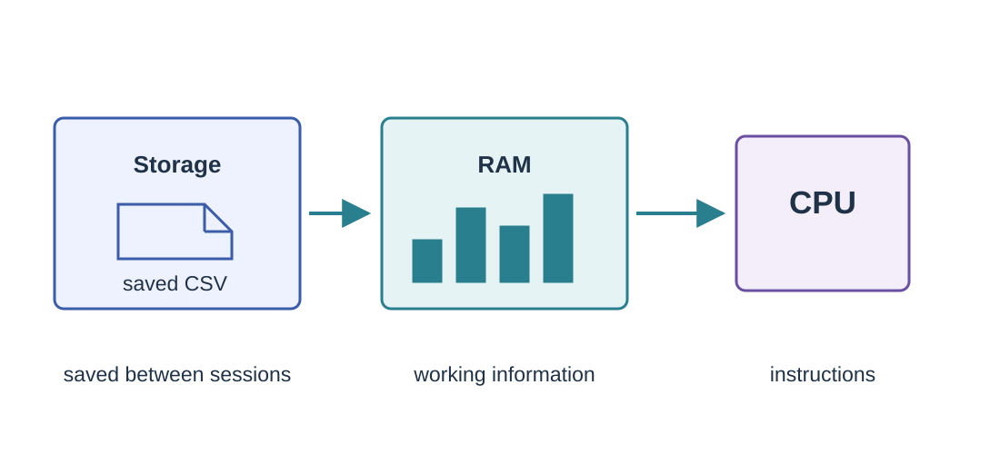
parallel::detectCores() counts them.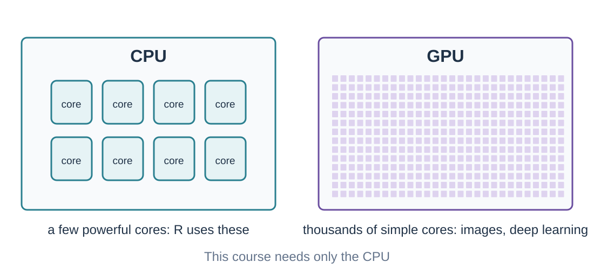
rsession or R: that is where your data are.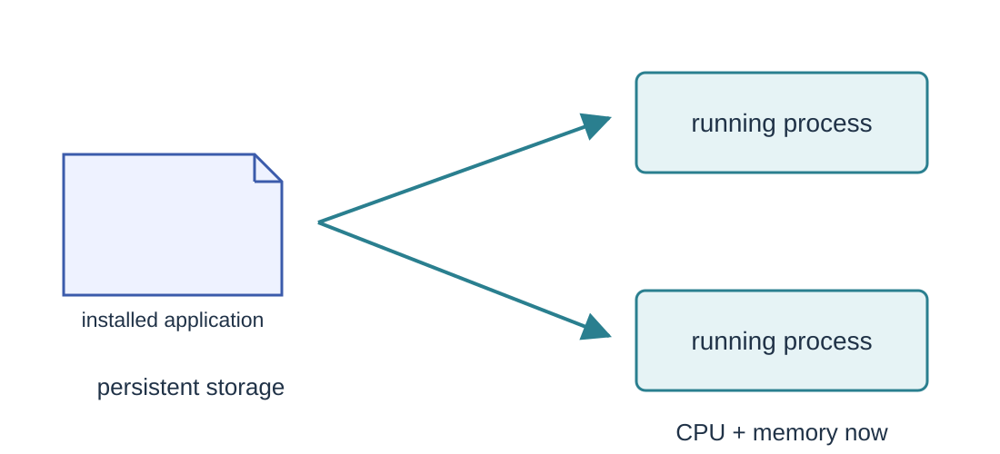
.Rmd, outputs) stay on disk.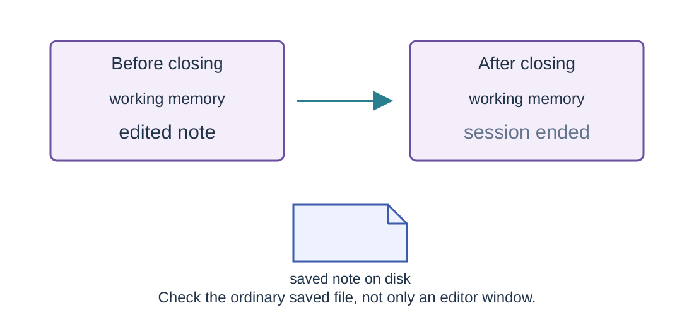
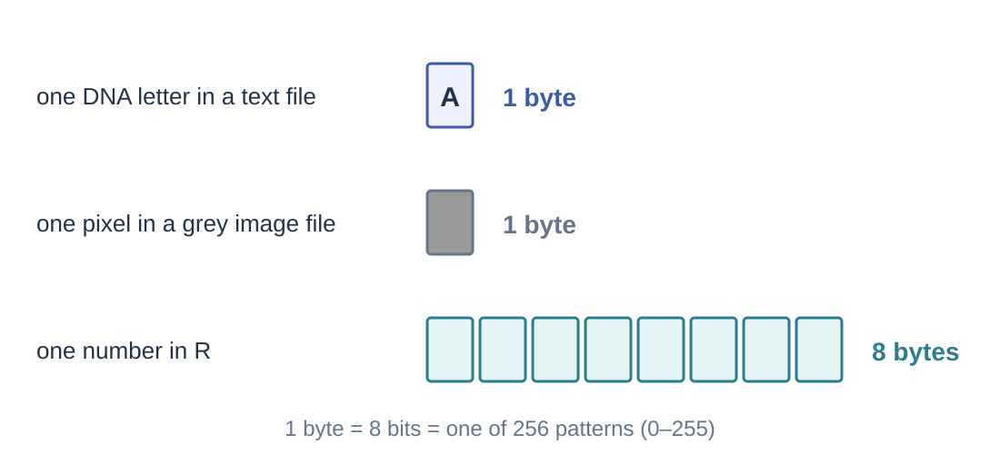
A byte = 8 bits = one of 256 patterns. 1 kB = 1,000 bytes; 1 MB = 1,000,000; 1 GB = 1,000,000,000.
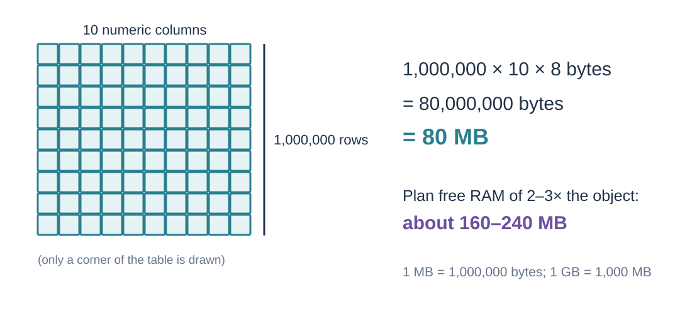
RAM ≈ rows × numeric columns × 8 bytes. Plan for 2–3× that: R makes copies while it works.
x <- rnorm(1000000)
format(object.size(x), units = "MB", standard = "SI") # "8 MB"
set.seed(21)
n <- 100000
big <- data.frame(matrix(round(rnorm(n * 10, mean = 20, sd = 4), 1), ncol = 10))
format(object.size(big), units = "MB", standard = "SI") # "8 MB"
write_csv(big, "output/big-measurements.csv")
file.size("output/big-measurements.csv") / 1e6 # 4.79| Object | Prediction | R says |
|---|---|---|
| 1,000,000 numbers | 8 MB | 8,000,048 bytes |
| 100,000 rows × 10 columns, in R | 8 MB | 8.0 MB |
| same table as CSV | ≈ 5 MB (5 characters per value) | 4.79 MB |
data/seedlings.csv: file / object |
tiny | 592 bytes / 6,968 bytes |
object.size() = bytes in RAM; file.size() = bytes on disk.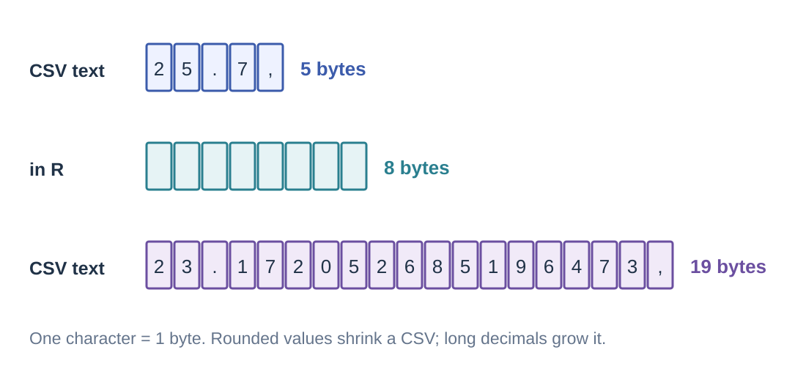
One character = one byte. Rounded values make a CSV smaller than its R object; long decimals make it larger.
S000001, …): CSV only 5.6 MB, in R 14.4 MB. Each different text value costs about 64 bytes.treated / control) stay cheap: R stores each different text once.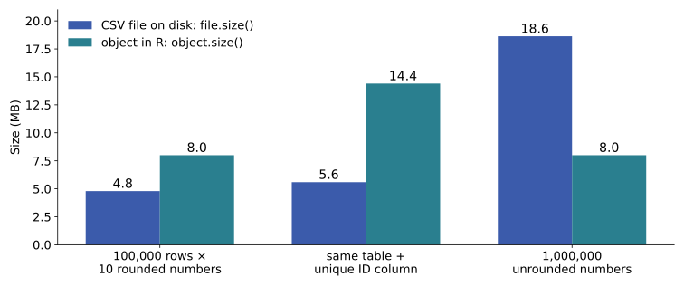
dna <- readLines("data/dna.txt")
nchar(dna) # 40
file.size("data/dna.txt") # 41
bases <- strsplit(dna, split = "")[[1]]
table(bases) # A 11, C 9, G 9, T 11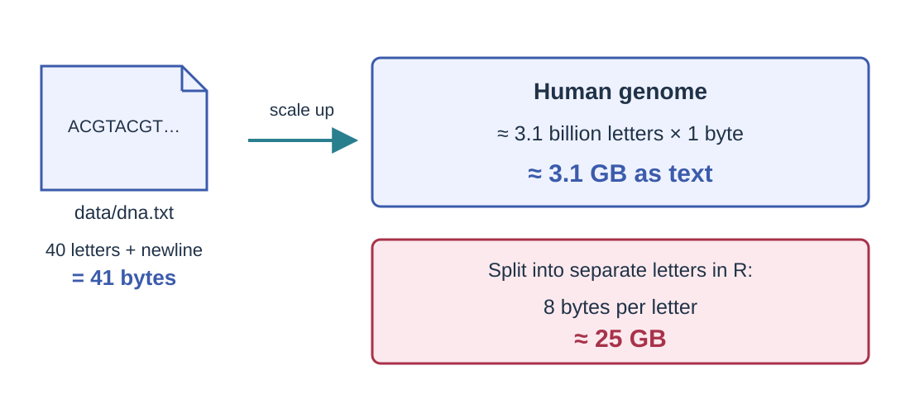
data/pixels.csv: 8 × 8 = 64 pixels; 24 are above 100.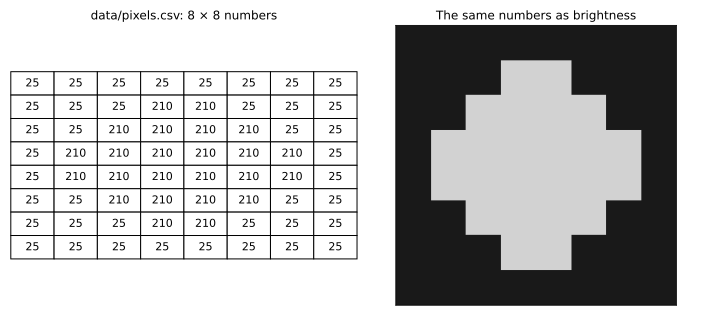
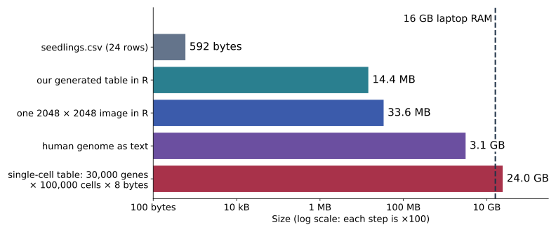
Single-cell RNA-seq: 30,000 genes × 100,000 cells × 8 bytes = 24 GB, more than a 16 GB laptop, before any working space.
Error: cannot allocate vector of size …, or the session crashes and the Environment is lost.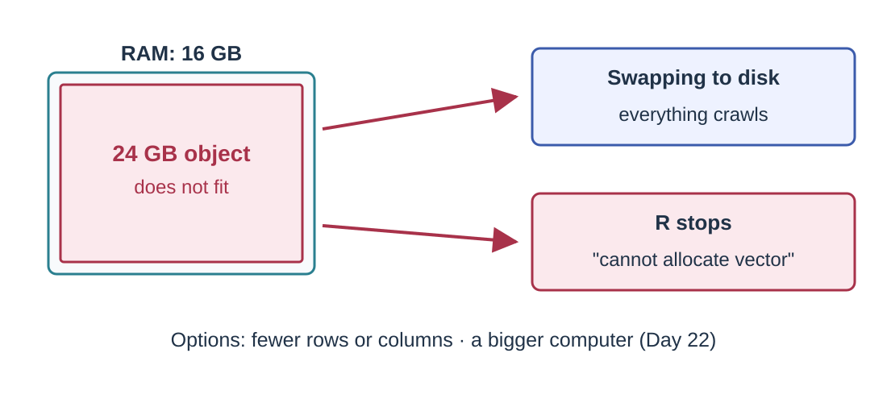
| Idea | Key fact |
|---|---|
| CPU | does the calculations; a few cores |
| RAM | fast, temporary; R objects live here; emptied when R closes |
| Disk | slow, permanent; files live here |
| GPU | thousands of simple cores; images, deep learning; not needed here |
| RAM for a table | rows × numeric columns × 8 bytes; plan 2–3× |
| File vs object | CSV text: 1 byte per character; can be smaller or larger than in R |
| Scale | genome ≈ 3.1 GB as text; 2048² image ≈ 33.6 MB in R; single-cell table ≈ 24 GB |
Next (Day 22, remote computer): log in to a bigger computer, move a project there, render, and bring the result back.
Now: Open exercises · Quiz. Leave with data-size.R, output/big-measurements.csv and reports/data-size.txt.